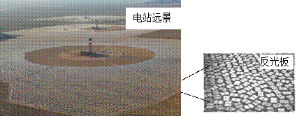
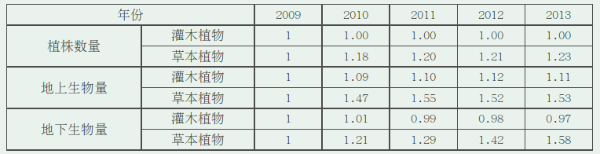
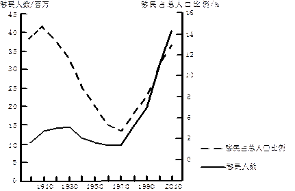
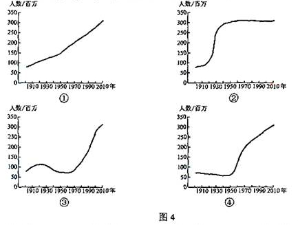
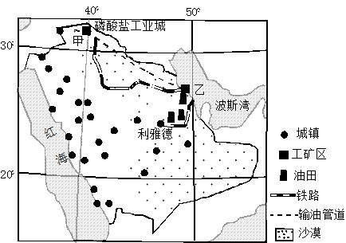
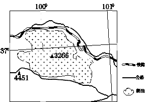
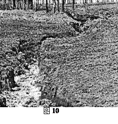

None - Fade - Slide - Convex - Concave - Zoom
选择班级
幻灯片样式
Black (default) -
White -
League -
Sky -
Beige -
Simple
Serif -
Blood -
Night -
Moon -
Solarized
太阳能光热电站（图1）通过数以十万计的反光版聚焦太阳能，给高塔顶端的锅炉加热，产生蒸汽，驱动发电机发电。据此完成1-3题。
1.我国下列地区中，资源条件最适宜建太阳能光热电站的是：
A.柴达木盆地
B.黄土高原
C.山东半岛
D.东南丘陵
【解析】1、柴达木盆地位于青藏高原上，海拔高，空气稀薄，大气对太阳辐射虚弱少，太阳辐射强，太阳能资源丰富。其它三地位于季风区，降水多、阴天多，太阳辐射较少，所以A对。
2.太阳能光热电站可能会：
A.提升地表温度
B.干扰飞机电子导航
C.误伤途径飞鸟
D.提高作物产量
2、光热电站是依靠光能集聚产生热能制造蒸汽，来推动发动机运转，强光、高热能可能会误伤途径的飞鸟，所以选C。
3.若在北回归线上建一太阳能光热电站，其高塔正午影长于塔高的比值为P，则
A.春、秋分日P=0
B. 夏至日P>0
C. 全年日P<1
D. 冬至日P>1
3、在北回归线上建一太阳能光热电站，二分日时正午太阳高度为66.5°，影子不为0，影长与塔高比重P不等于0，A错；夏至日时，正午太阳高度为90°，影长为0，P＝0，B错。冬至日，正午太阳高度为43°，影长大于塔高，P＞1，D对。
20世纪50年代，在外国专家的指导下，我国修建了兰新铁路。兰新铁路在新疆吐鲁番附近的线路如图2所示。读图2，完成4-6题。
4、推测外国专家在图示区域铁路选线时考虑的主导因素是
A、河流
B、聚落
C耕地
D地形
【解析】 4.该地位于西北地区，铁路的建设会选择在海拔低的山谷附近，所以结合这个角度，答案也是地形。选D。
5、后来，我国专家认为，兰新铁路在该区域的选线不合理，理由可能是
A、线路过长
B距城镇过远
C、易受洪水威胁
D、工程量过大
【解析】 5.从图中可以看出，吐鲁番为盆地内部，而兰新线位于盆地边缘，所以最可能是距离城镇远。该地位于西北，降水少，所以洪水灾害威胁小。从图中看出，该铁路线没有穿越等高线，所以工程量不大。B对
6、50多年来，兰新铁路并没有改变该区域城镇的分布，是因为该区域的城镇分布受控于
A、地形分布
B、绿洲分布
C、河流分布
D沙漠分布
【解析】 6.该地区的城镇主要分布在盆地边缘的绿洲地区。所以选B。
人类活动导致大气中含氮化合物浓度增加，产生沉降，是新出现的令人担忧的全球变化问题。一科研小组选择受人类干扰较小的某地，实验模拟大气氮沉降初期对植被的影响。实验地植被以灌木植物为主，伴生多年生草本植物。表1数据为实验地以2009年为基数，2010-2013年实验中植被的变化值（测量时间为每年9月30日）。据此完成7-9题。
7、实验期间植被变化表现为 ①生物量提高 ②生物量降低 ③植株密度改变 ④植被分布改变
A、①③
B、②③
C、①④
D、②④
【解析】 7.生物量等于地上生物量和地下生物量之和，随着时间发展，除了地下生物灌木植物略有减少，其他都是增加，简单计算可知，生物量为增加，即①对。柱物密度即植株数量，从表中可知，数量呈递增趋势，即密度增加，即③对。
8、实验期间大气氮沉降导致灌木、草本两类植物出现此消彼长竞争的是
A植株数量
B、总生物量
C、地上生物量
D、地下生物量
【解析】 8.从表直接可以看出，随着时间发展，地下生物量灌木植物减少，但是草本植物增加，符合了题目此消彼长的设问。
9．根据实验结果推测，随着大气氮沉降的持续，植被未来变化趋势是
A．灌木植物和草本植物繁茂
B. 灌木植物和草本植物萎缩
C．灌木植物茂盛、草本植物萎缩
D.灌木植物萎缩、草本植物茂盛
【解析】 9.从表中可以看出，地上和地下的灌木植被相加呈减少趋势，草本植被呈增加趋势。
图3显示某国移民人数及其占总人口比例的变化。读图3，完成10-11题。
10.图4所示的①、②、③、④四幅图中，符合该国人口增长特点的是
A．①
B. ②
C.③
D.④
 【解析】 10.由图可知移民人数/总人口=移民人口比例，可以推导出移民人数/移民人口比例=总人口，该国虽然移民数量发生多少变化，但是整体来看总量是在增加，即可得①图符合，选A。
11.该国人口增长数量最多的时段为
A.1910-1930年
B.1930-1950年
C. 1950-1970年
D. 1970-1990年
【解析】 11.该国人口呈增加趋势，1950—1970迁移下降，所以增加最多，C对。
36.（24分）阅读图文资料，完成下列要求：
图6所示区域海拔在4500米以上，冬春季盛行西风，年平均大风（大于等于8级）日数157天，且多集中在10月至次年4月，青藏铁路在桑曲和巴索曲之间的路段风沙灾害较为严重，且主要为就地起沙，风沙流主要集中在近地面20-30厘米高度范围内。
（1）分析错那湖东北部沿岸地区冬春季风沙活动的沙源。（6分）
（1）多条河流在此注入错那湖，泥沙沉积，河口三角洲面积较大，冬春季节河流水位低，何谈泥沙裸露；错那湖水位。（因河口外湖区水深较浅）出露的湖滩泥沙面积较大。
（2）说明上述沙源冬春季起沙的原因。（5分）
（2）冬春季气候干燥（降水少），地表缺乏植被（草）的保护；大风多，湖面较宽阔，西风经湖面无阻挡，沙源东部为河谷，风力强劲。
【解析】 （1）—（2）春季多风沙参考沙尘暴，即风源和沙源
（3）简述风沙对该路段铁路及运行列车的危害（7分）
（3）（铁路路基较高）风沙堆积，填埋路基和轨道；侵蚀路基（和路肩）；损害机车车辆和同新、信号灯，加大钢轨、车轮等设别的磨损；影响运行列车安全。
【解析】 （3）从材料可知，该地位于青藏高原，风沙多，且风沙大，可能会掩埋铁路，影响铁路运行；另，该地区风力侵蚀作用强烈，可能会对铁路基础设施等造成危害。（该题答案语言不太好组织，应该是失分较多的一题）
（4）针对该路段的风沙灾害，请提出防止措施（6分）
（4）（阻沙措施）在铁路两侧设立阻沙墙（高立式沙障）。 （固沙措施）在沙地上用碎石等覆盖沙面，设置石（草）方格沙障。
【解析】 （4）为了应对风沙危害，就需要提高植被覆盖率、修草方格沙障（宁夏沙坡头最典型）
37.（22分）阅读图文资料，完成下列要求。
沙特阿拉伯人口主要集中于在沿海和内陆绿洲地区，21世纪初，该国甲地发现便于开采，储量丰富的优质磷酸盐矿，位置见图7，初期开采的矿石送往乙地加工，2013年该国在甲地附近筹建了磷酸盐工业城，使其成为集开采，加工为一体的国际磷酸盐工业中心。
（1）分析沙特阿拉伯建设国际磷酸盐工业中心的优势条件。（8分）
（1）沙特阿拉伯（靠近亚洲、非洲、欧洲市场），濒临海洋，产品运输方便；磷酸盐矿品位高，储量大，易开采；油气资源丰富，能源成本低，资金雄厚。
【解析】 （1）工业区位优势考查。
（2）分析在甲地附近建设磷酸盐工业城需要克服的不利地理条件。（8分）
（2）高温干燥，淡水资源短缺，施工环境差；地处偏远地区，人口稀少，劳动力缺乏；地区开发历史短，工业基础设施薄弱。
【解析】 （2）该地属于热带沙漠气候，全年高温少，建设工业城淡水缺乏、温度高、干旱；位于内陆，对外联系不便；以及该国人口少，劳动力短缺。
（3）在甲地或乙地加工磷酸盐矿石，都会造成污染。有观点认为“与乙地相比，甲地加工磷酸盐矿石造成的污染危害较轻”。你是否赞同这种观点？请通过对甲、乙两地的对比分析，阐述理由。（6分）
（3）赞同：甲地人口少，未利用土地多，能容纳更多污染物；经济活动密集，对污染更敏感；位于港口，容易污染海洋等。 反对：甲地生态环境更脆弱（水资源短缺，植被稀少，易荒漠化）；乙地环境保护设施较完备，污染物处理技术较成熟。
【解析】 （3）开放性试题，挑一种观点说出合适的理由即可。
42. (10分)旅游地理
今年来，一种不同于传统观光游的“深度游”悄然兴起，深度游是指旅游者通过徒步、自驾等方式，围绕某一特定主题获得深刻体验的旅游活动，有3位旅游者结伴拟于4月下旬自驾前往图8所示区域（湖面高程3196米），进行以观鸟为主题的深度游。
指出为应对旅游地自然环境的特殊性，他们需要携带的生活用品，并说明理由。
海拔较高（3000米以上），氧气含量偏低，需带氧气带（瓶），抗缺氧药品等；空气较稀薄，太阳辐射强，需带防晒物品；气温偏低，昼夜温差大，续备防寒衣物；此该区域多大风，需备防寒帐篷灯等。
【解析】 根据经纬度可以推断，该地区为青藏高原。该地区空气稀薄（缺氧），光照强（防晒），温度低且昼夜温差大（御寒），大风天气比较多（防风）等。
43，（10分）自然灾害与防治
图9所示区域地处青藏高原东部边缘的断裂带，2013年4月20日，这里发生了7.0级强烈地震，2013年4月21日夜至24日，震区出现多次降雨，本次地震后，图示区域发生了严重的次生地质灾害。
说明本次地震后图示区域次生地质灾害严重的原因。
图示区域（地处断裂带）岩石破碎，山高、坡陡、谷深，强烈地震造成震区岩石松动、破裂，形成崩塌、滑坡等次生地质灾害；降雨致滑坡、崩塌加剧，引发泥石流。
【解析】 材料所示，该地区位于断裂带，即板块交界处，地壳运动活跃，多地震，岩石整体性易遭破坏；又该地区多暴雨，所以易诱发滑坡、泥石流。
44、（10分）环境保护
坡耕地上的切沟由流水侵蚀而成，图10为切沟景观
指出切沟对坡耕地的危害，并提出防止措施。
危害：切沟分割土地，破坏耕地，妨碍耕作。（严重时课阻断交通）；加大土壤侵蚀量（切沟形成后，水流集中，冲刷能力增强，水土流失加剧）。 防治措施：调整耕作方式，防止水流集中（如等高耕作、间作、修地埂等）；修建引水排水措施（如修建排水沟等）；（在水流集中区域）设置障碍（如草地、灌丛等）；在切沟中修建拦水坝（谷坊）；切沟填埋。
【解析】 该题具体参考黄土高原的水土流失等相关问题进行作答。